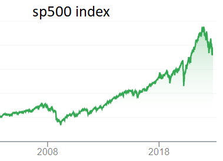

The longest bull market in history ran from 2009 to 2020, until COVID-19 began to sweep the world and sent stock prices diving. While economic conditions dwindled for some time, the bear market only lasted a few months, then the bulls took control once again. Were it not for the coronavirus, the markets could theoretically be still enjoying the longest bull market in history. That’s exciting — and scary. History tells us that the market is a cyclical beast, but when its ebbs or flows are off balance, serious corrections happen. With share prices reaching record highs, even in the face of economic hardship and increasing debt loads, and key valuation metrics telling investors to turn and run, a big question arises. Is a stock market crash just around the corner?
-
Prolonged Dovish Monetary Policy
The fed funds rate is the interest rate charged between banks to lend excess funds overnight. When this rate is lower, interest rates on loans like mortgages, auto loans, credit cards, and more become lower, spurring a wave of lending. Of course, when consumers are able to borrow more money relatively cheaply, they tend to do so, creating tons of liquidity in the U.S. economy. As a result, spending ensues, leading to higher revenues and profitability for corporations, and ultimately a bull market. However, prolonged low rates can be a very bad sign because they can’t last forever. At some point, debt will have to slow and rates will have to increase, resulting in a tightening of consumer spending and, if the contraction is significant, a stock market crash. Currently, the Fed Funds Rate sits at 0.25%, a very dovish sign, and it has been there for years. As recently as early 2020, the Federal Reserve expected this rate to be at incredible lows for at least a few more years. However, more recently, the Fed announced that it is aiming to increase the Fed Funds rate in late 2022. As we get closer to the increase, there’s a strong chance that investors will become increasingly bearish, which could result in a market crash. Rising Inflation
Some inflation is natural. As the economy progresses, a slow and steady increase in prices for consumer goods, services, and any other category is normal. It’s why your great-grandparents could buy an entire lunch for a dime, and today it’s hard to find a stick of bubble gum for that price.An Extended Bull Market
The market is thought to be a balanced system, but the reality is that it’s anything but balanced. From day to day, month to month, and even year to year, the stock market struggles to keep valuations in check as the bears and bulls argue their points. Any time the bulls take control for too long, the prices investors pay to own stock go through the roof, generally creating excessive overvaluations. On the other side of the coin, too much control by bears sends stock prices tumbling, resulting in extreme undervaluations.A Bubble In Market Valuations
Bubbles appear in the stock market all the time. Some of the most memorable in recent history include the dot-com bubble in the late 1990s and the real estate bubble in the 2000s


IN DEPTH ANALYSIS OF THE CAUSES (PAGE 1)
HOMEPAGE